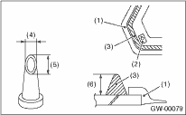

1. Cut off the nozzle tip as shown in the figure.

|
(1) |
Molding |
|
(2) |
Locating pin |
|
(3) |
Adhesive |
|
(4) |
10 mm (0.39 in) |
|
(5) |
15 mm (0.59 in) |
|
(6) |
10 — 13 mm (0.39 — 0.51 in) |
2. Install the glass in the same procedure as for windshield glass. 
3. After completion of all work, allow the vehicle to stand for about 24 hours.
NOTE:
• When door is opened/closed after glass is bonded, always lower the door glass first, and then open/close it carefully.
• Move the vehicle slowly.
• For minimum drying time and vehicle standing time before driving after bonding, follow instructions or instruction manual from the adhesive manufacturer.
4. After curing of adhesive, pour the water on external surface of vehicle to check that there are no water leaks.
NOTE:
When a vehicle is returned to the user, tell him or her that the vehicle should not be subjected to heavy impact for at least three days.